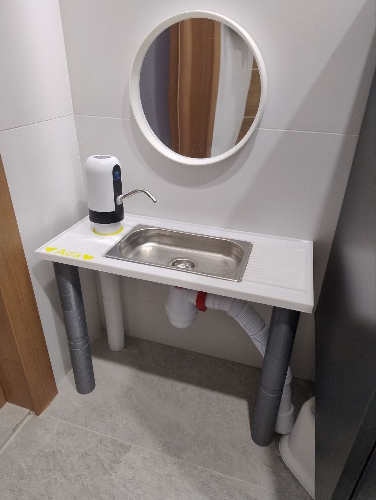
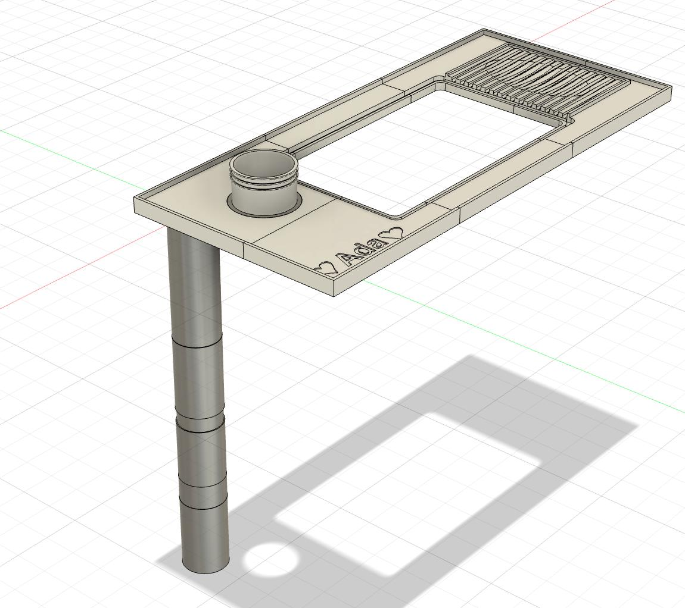
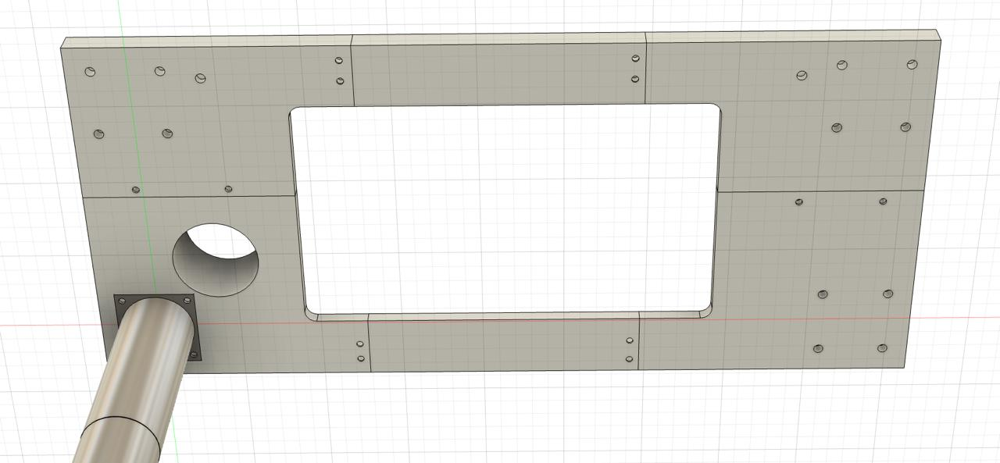
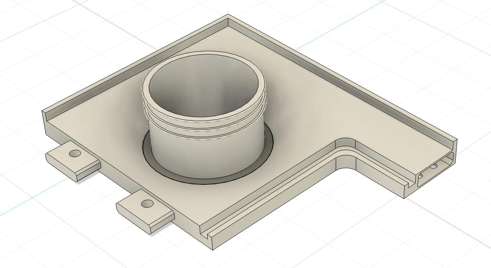
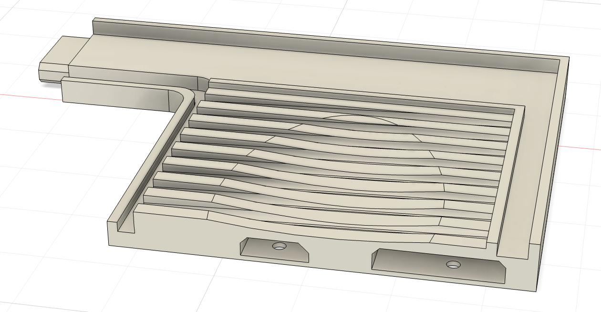
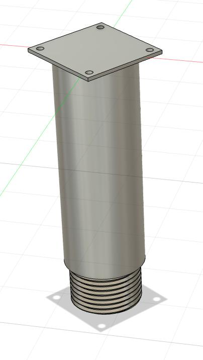
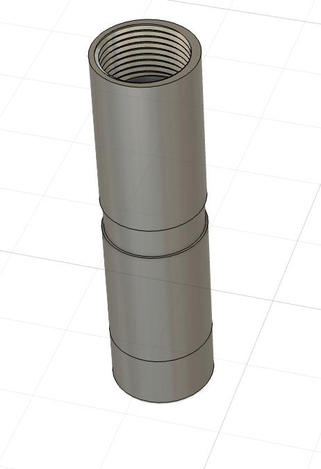
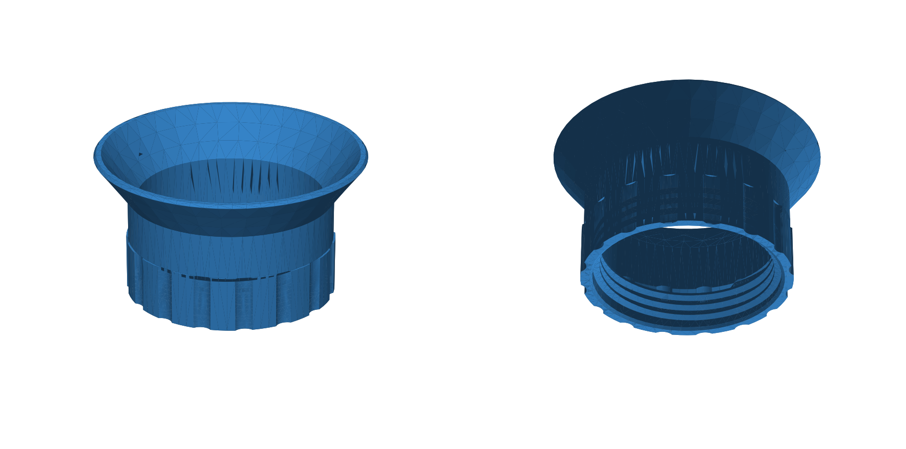

Around 12 to 18 months of age, one of the central tenets of Montessori education is independence in everyday hygiene: washing hands, brushing teeth, and washing up after meals.
Standard bathroom sinks are fundamentally mismatched for toddlers: even with a stepping stool, reaching the faucet requires straining, balance is precarious, and water splashes everywhere. Most commercial alternatives on the market are either toy plastic play kitchens without real drainage or bulky wooden structures that consume half the room.
I set out to design and build a compact, fully autonomous running-water toddler sink, sized precisely for an ~80 cm tall child — modeled in Autodesk Fusion 360 and engineered for desktop 3D printing with PETG.

1. Ergonomic Envelope & Hard Constraints
Key dimensions established during initial planning:
- Countertop height: 390 mm from the floor (ideal for an 80 cm tall toddler).
- Deck width: 500 mm.
- Deck depth: 220 mm. The most critical constraint is keeping depth shallow — if the counter is too deep, a small child has to lean across the deck on their stomach to reach the stream of water, soaking their clothes.
- Basin: standard stainless steel gastro container GN 1/4 (262×158 mm, 35 mm deep). Durable, food-safe, inexpensive, and easily sanitized.
- Splash lip: a continuous raised perimeter rim (8 mm high) surrounds the entire countertop to prevent water from spilling onto the bathroom floor.
- Sloped drying rack: a wavy corrugated drainboard integrated on the right side drains standing water from cups and brushes straight into the sink basin.
- Personalized touch: embossed nameplate (“Ada”) directly molded into the front deck.

2. 6-Part Modular Countertop & M4 Heat-Set Inserts
Because a 500×220 mm deck exceeds standard print beds (e.g. 256×256 mm on modern desktop printers), the countertop was split into 6 interlocking modular segments (3 front sections, 3 rear sections).

Mechanical Joining & Heat-Set Inserts
- Tongue-and-Groove Alignment: each segment features matching tongue-and-groove joints and alignment tabs with +0.2 mm clearance, preventing any shear displacement or misalignment along the seams.
- Brass Heat-Set Threaded Inserts (M4): machine screws should never be threaded directly into 3D-printed plastic. Every mating joint and leg mounting pad features blind pilot holes into which brass knurled M4 heat inserts are melted using a soldering iron. Standardizing on M4 across the entire build ensures solid mechanical stiffness.
- Under-Deck Clamping: matching flange pockets on the underside allow stainless M4 hex socket screws to pull adjacent segments tightly against each other.
- Watertight Sealing: neutral sanitary silicone was applied along all seam interfaces prior to torquing the screws down, ensuring zero capillary leakage between parts.
| Left Segment with Pump Mount | Right Segment with Corrugated Drainboard |
|---|---|
 |
 |
3. Modular Threaded 3D-Printed Legs
The legs are also 100% 3D printed from durable PETG, engineered as a modular threaded system:
- Top Flange Mount: a square 4-hole mounting bracket screws into brass M4 heat inserts embedded in the underside of the countertop. It features a heavy-duty male buttress thread at the bottom.
- Threaded Extension Cylinders: modular hollow leg segments screw directly into one another. As the child grows, additional threaded sections can be printed and screwed in, raising the deck from 390 mm to 460 mm and beyond.
| Top Flange Mount | Threaded Leg Extension Segment |
|---|---|
 |
 |
4. Closed-Loop Plumbing Architecture
All hydraulics and canisters are self-contained in the lower envelope beneath the counter:
[ Clean Water Canister (5L) ] ---> (ViO E11 Dispenser Pump) ---> [ Faucet Outlet ]
|
v
[ Dirty Water Canister (5L DIN 45) ] <--- (1¼" Sanitary Trap) <--- [ Stainless Basin ]
Water Delivery:
- Driven by a rechargeable ViO E11 electric water pump. It runs off an internal lithium battery charged via USB-C every few months.
- A custom cylindrical 3D-printed collar secures the pump flush against the deck, with a rigid feed tube extending down into the 5.5 cm neck of the clean water tank.
- The child taps the top touch sensor once to start the stream and taps again to shut it off — zero grip strength required.
Drainage & Custom DIN 45 Funnel:
- Fitted with a standard compact 1¼" bathroom siphon with an integrated strainer basket.
- To safely direct wastewater into an airtight jerrycan, I modeled a custom screw-on funnel in build123d. It threads directly onto the DIN 45 container neck using buttress KS threads, seating the siphon tube without leaks or odor.

5. Real-World Results
The sink has transformed our daily routine:
- Complete toddler independence: no stepping stools, no lifting, no falling risk.
- Practical capacity: a single 5-liter clean water swap lasts 4–5 days of active toddler handwashing and brushing.
- Clean & dry: by keeping the counter depth to just 22 cm and adding the perimeter splash rim, clothes and bathroom floors stay dry.
We simply made what was practical for our toddler and fit our bathroom space: modeled it in Fusion 360 and build123d, 3D-printed it, and it just works great every day.